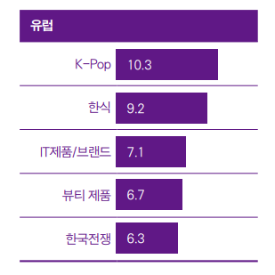
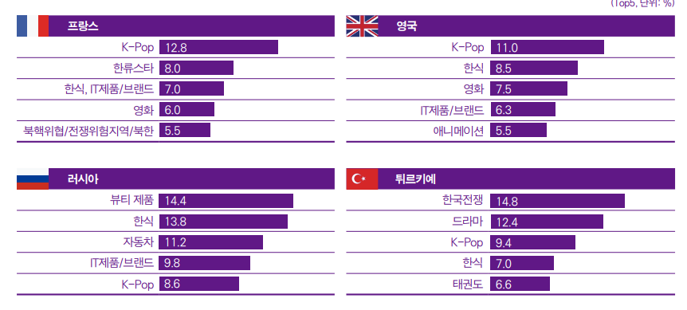

| 한국 연상 이미지 | 국가별 한류 순위 |
|---|---|
|  |  |
유럽은 ‘K-Pop’, ‘한식’이 각 국가별로 연상 이미지 상위권에 위치한 가운데 ‘IT제품/브랜드’도 튀르키예를 제외한 3개국에서 순위권에 올랐다.
프랑스와 영국에서는 전년도 조사에 이어 ‘K-Pop’이 1위를 지켰지만 프랑스의 ‘K-Pop’ 연상률은 2017년부터 매년 떨어지고 있고 이번 조사에서도 전년 대비 0.6%p 하락했다.
반면 ‘한류스타’ 연상률은 2.6%p 증가해 전년도 7위에서 다섯 계단 상승한 2위를 기록했다.
‘IT제품/브랜드’는 프랑스에서 3위, 영국과 러시아에서는 4위에 올라 유럽 대부분 지역에서 높은 인지도를 보였다.
러시아는 ‘뷰티 제품’과 ‘자동차’가 각각 연상 이미지 1, 3위에 올라 전년과 마찬가지로 나머지 국가와 다른 양상을 보였고, 튀르키예의 경우 ‘한국전쟁’이 전년도에 이어 1위를 기록해 여전히 군사 동맹국의 이미지가 강한 것으로 나타났다.
유럽의 전체 문화콘텐츠 소비량 대비 한국 콘텐츠 소비량 비중은 21.21%로 비중이 가장 높은 장르는 드라마였다(24.14%).
유럽은 콘텐츠별로 15%에서 24%의 한국 콘텐츠 소비 비중을 기록해 5개 권역 중 한류콘텐츠를 가장 적게 이용하는 것으로 나타났다.
한류콘텐츠 접촉 경로를 살펴보면 유럽 역시 타 지역과 마찬가지로 한국 영상, 음악콘텐츠는 ‘온라인/모바일 플랫폼’을 통해 이용하고 있었다.
영화를 제외한 나머지 드라마, 예능, 애니메이션, 음악의 ‘온라인/모바일 플랫폼’ 접촉률이 70% 이상으로 높게 나타났다.
그다음으로 ‘TV’를 통한 접촉률이 높았지만 ‘온라인/모바일 플랫폼’과는 장르별로 약 10%~40%의 차이를 보여 격차가 컸다.
한국 패션, 뷰티, 음식은 ‘SNS상의 영상/사진’을 통해 접촉하는 경우가 가장 많았고 미주와 마찬가지로 이어 ‘유튜브 등에 업로드 된 개인이 직접 만든 동영상’(뷰티, 음식)과 ‘한국 영상콘텐츠’(패션)를 이용하는 비중이 높았다.
게임의 경우 ‘온라인/모바일 상에서 직접 플레이’하는 비중이 가장 높았고 출판물은 ‘자국/글로벌 사이트’를 통해 접촉하는 경우가 대부분이었다
유럽은 전체 권역 중 한국 제품과 서비스에 대한 향후 이용 의향이 가장 낮은 지역이었지만 전년도 결과와 비교해선 의향 수치가 소폭 증가한 것으로 조사됐다.
전반적으로 ‘한국 식품’, ‘휴대폰’, ‘화장품’, ‘가전제품’에 대한 구매 욕구가 높은 것으로 나타났고 ‘한국 방문’ 의향도 강했다.
국가별로는 영국과 튀르키예의 이용 의향이 가장 높았는데 영국은 전년 대비 약 20%p 가까이 수치가 증가했고 특히 ‘한국 식품’ 구매와 ‘음식점 식사’에 대한 이용 의향이 강했다.
반면 러시아는 전년 대비 이용 의향이 7%p 감소해 전체 국가 중 일본에 이어 두 번째로 낮은 수치를 보였다